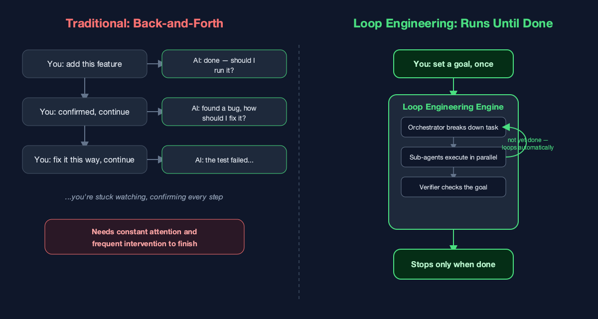
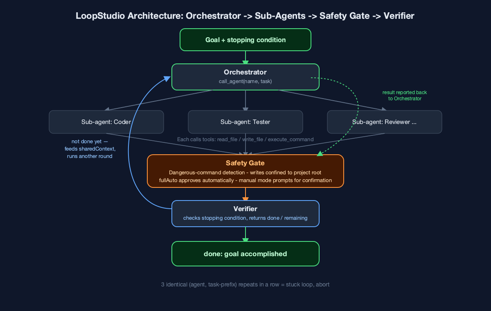

Designing Autonomous AI: Inside the Architecture of Loop Engineering
An in-depth look at how orchestrators, sub-agents, and verifiers work together to write and test code safely.
Here's a rhythm most developers know all too well: type a requirement, the AI replies with code, you say "that part's wrong," it fixes it, you say "keep going" — and this repeats five, ten, twenty times before the task is actually done. You can't step away from the screen, because every single step needs your approval before anything moves forward.
That's exactly the problem AITerm's LoopStudio is built to solve. The core idea behind it is what we call Loop Engineering: you state the goal once — no back-and-forth required — the AI breaks the task down itself, executes it itself, checks its own work, and only stops once the goal is genuinely complete.

Why back-and-forth doesn't scale
The real problem with the back-and-forth pattern isn't that the AI "isn't smart enough" — it's that the human becomes a required node in the loop. The more complex the task and the more steps it has, the longer you have to sit there watching — confirming, correcting, confirming again — and that role ends up consuming attention that could otherwise go somewhere else entirely.
Worse, many tasks are inherently multi-stage: write the code, then add tests, then self-review, then run validation once more. If every stage needs a human to step in, the AI never really gets to demonstrate what "autonomous" actually means — because the pace of progress is always capped by how fast a person can reply.
State the Goal Once. The Loop Handles the Rest.
Using LoopStudio is straightforward: you set a "goal" and a "stopping condition," hit start, and everything from there on is handled for you.

The system is built from three roles:
The Orchestrator breaks the goal down. It never writes code or runs commands itself — instead, through a single tool called call_agent, it hands off each sub-task to the right sub-agent: "this part goes to Coder," "this part goes to Tester."
Sub-agents are the ones who actually do the work. Each has its own role definition (AITerm ships with nine built-in presets you can use right away — Coder, Tester, Reviewer, DevOps, Security Auditor, Architect, and more). Once a sub-agent gets a task, it calls tools like read_file, write_file, and execute_command on its own to read and write files and run commands, continuing step by step until there's nothing left to do, then reporting the result back to the Orchestrator.
The Verifier is what makes the whole loop genuinely autonomous. After every round of the Orchestrator dispatching work, the Verifier takes the stopping condition you set at the start and checks whether the goal has actually been met. If not, it lists what's been accomplished and what's still missing — and that feedback gets written into a running context (sharedContext) that the next round of the Orchestrator reads before continuing to fill in the gaps. This keeps cycling until the Verifier reports "done," or until it hits the maximum number of rounds you configured.
In other words, what advances the loop isn't your next reply — it's the Verifier's judgment about the goal. That's the fundamental difference between Loop Engineering and traditional chat-driven development.
Autonomous Doesn't Mean Reckless: The Safety Gate
Letting AI run its own loop and execute its own commands sounds a little unnerving — what if it runs something dangerous, or accidentally writes outside the project folder? That's exactly why LoopStudio has a built-in "safety gate."
Before any sub-agent executes a command, the system does two things: first, it checks the command against a set of rules for what counts as "dangerous" (things like rm -rf, sudo, a forced git push, disk-formatting operations); second, it checks where the command's write target actually lands, making sure it stays inside the project directory you specified — even indirect writes through >, tee, cp, or sed -i get caught and checked. If the write target can't be resolved with confidence, it's treated as unsafe by default rather than waved through.
If either check trips, there are two outcomes: if you've enabled "full auto" mode, it's approved automatically; if not, the run pauses and a confirmation panel pops up, spelling out exactly what the command is about to do, and waits for your go-ahead. In other words, the autonomous loop takes "you don't have to keep confirming" off your plate — but the decision on anything risky still sits with you.
No Infinite Loops, No Black Boxes
Loop Engineering isn't "run until the heat death of the universe" either. The system tracks the last three (agent, task) pairs it's dispatched; if the same agent gets the same task prefix three times in a row, that's treated as a stuck loop and the run aborts on its own, instead of grinding away until it hits your configured round limit. And every step along the way — who was assigned what, which tools got called, what the Verifier had to say — shows up live in the "Execution Trace" panel, so a complex automated process never turns into a black box you can't see inside.
The Shift Loop Engineering Makes
What Loop Engineering is trying to solve is simple: hand the job of "keep pushing the task forward" back from the human to a loop that checks its own work. All you need to do is state the goal and the stopping condition once — from there, the Orchestrator breaks it down, sub-agents do the work, the safety gate keeps watch, and the Verifier signs off, round after round, until the job is genuinely done.
If you've ever felt dragged along by back-and-forth chat while trying to get through a complex task, it might be worth letting the AI run a loop of its own — you may find you didn't need to sit there watching the whole time after all.
Found this useful? Hit the clap button (you can clap up to 50 times!) and follow me for more on AI-assisted development, autonomous agents, and the tools that are quietly reshaping how software gets built.